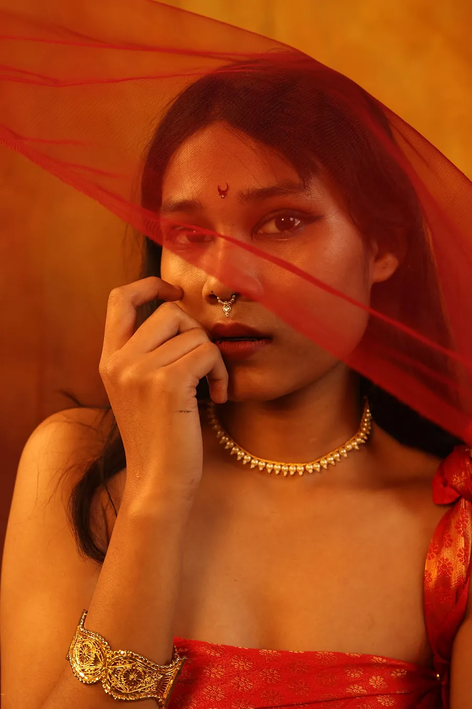
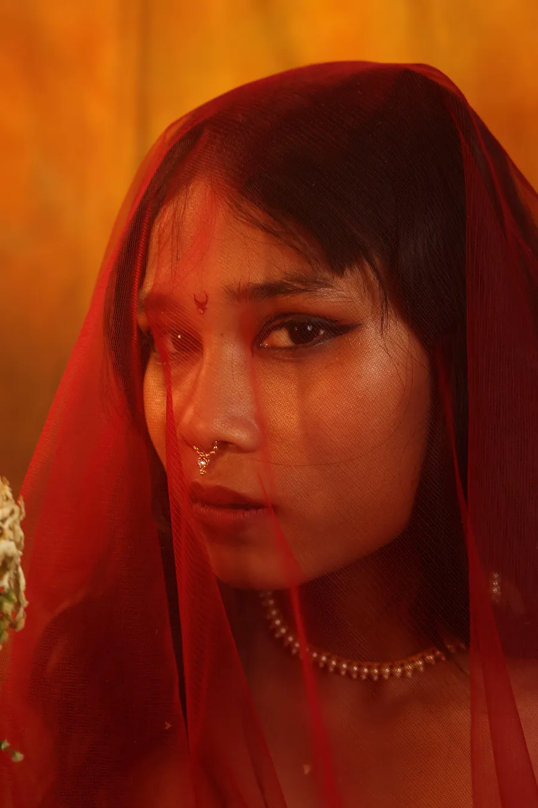
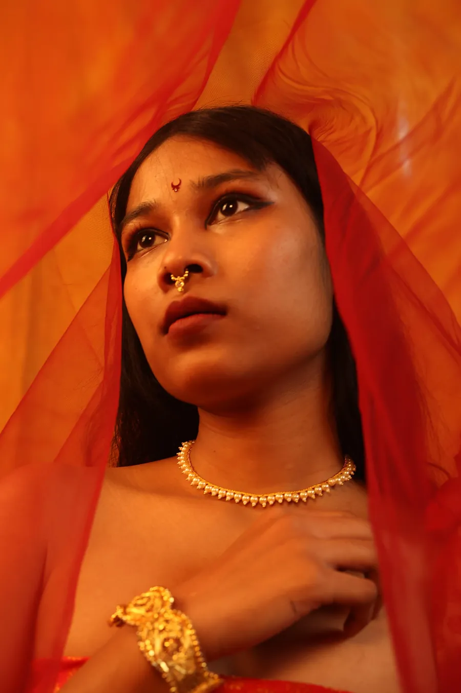
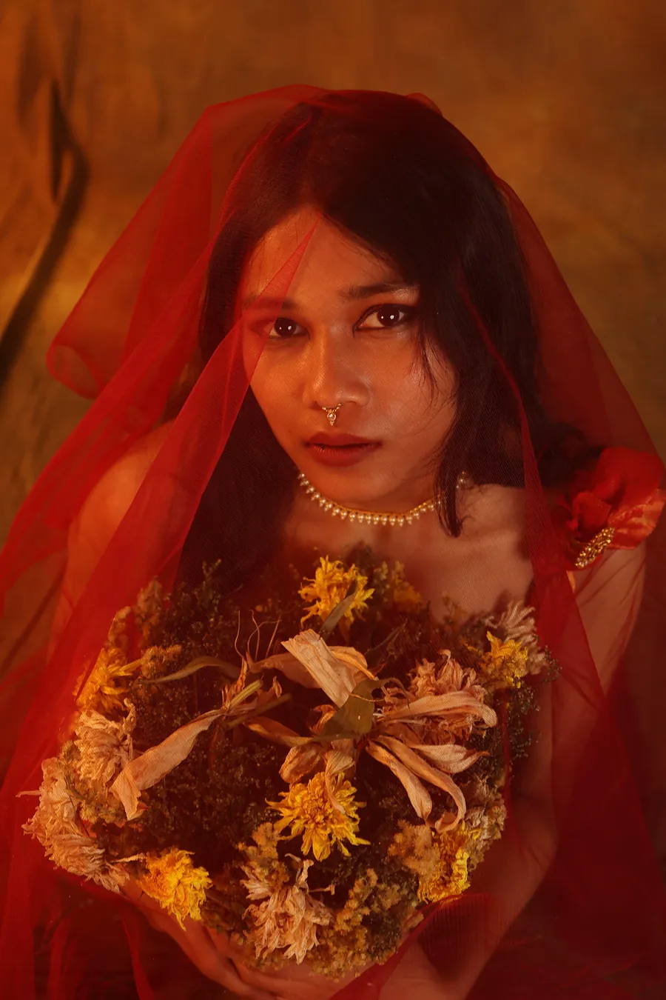
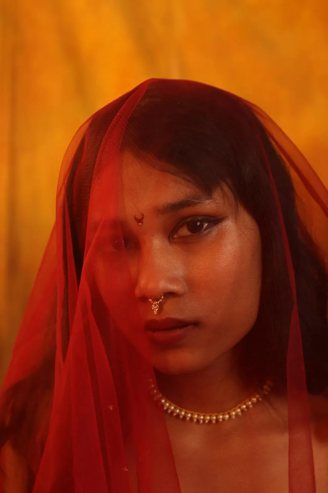
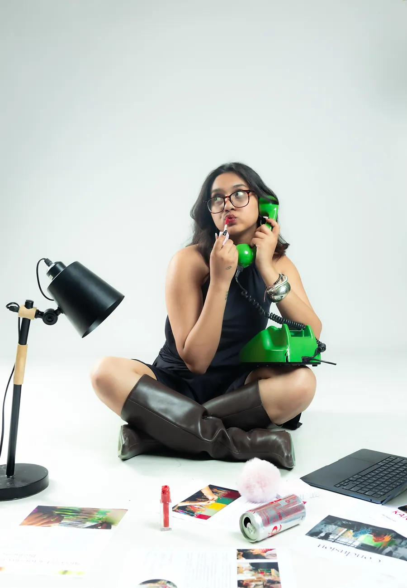
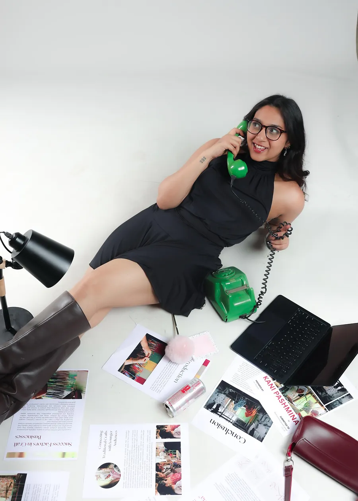
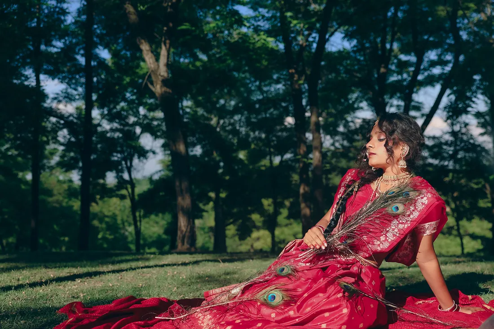
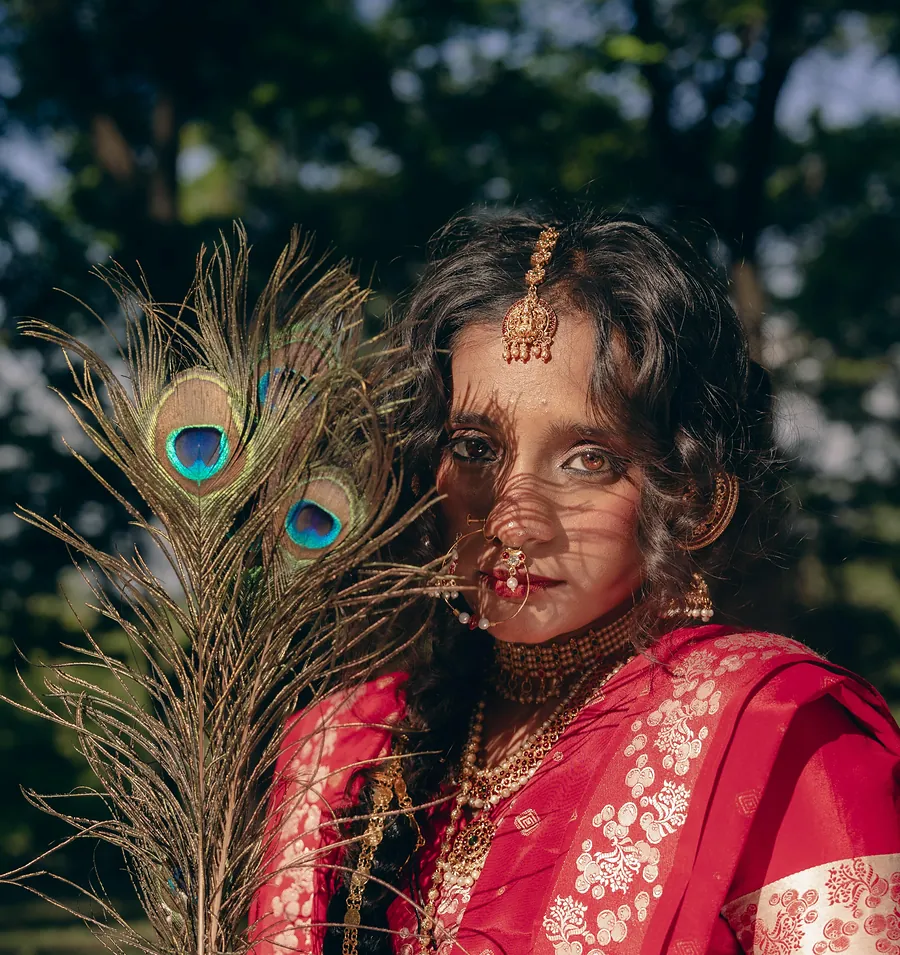

Styling & Photography
Concept, styling and photography by Sayantika Sahu. Two studio editorials and a shoot in the woods.
Not everything concealed…
An exploration of femininity, identity and the beauty of concealment through the symbolism of the veil. Inspired by traditional Indian bridal aesthetics, the photoshoot captures the delicate relationship between visibility and mystery. Props — tulle veil, roses, dried flowers, gold jewellery







Office Affair
Inspired by the playful charm of retro office culture and vintage fashion editorials, this photoshoot reimagines the everyday workspace as a setting for self-expression. Through quirky props, exaggerated poses and contrasting colours, it captures a woman balancing professionalism with individuality. Props — green rotary phone, desk lamp, laptop, pom-pom pen, red lipstick, burgundy bag




Reverie
Inspired by the quiet beauty of nature and the romanticism of traditional Indian bridal attire, this photoshoot captures a dreamy interpretation of feminine elegance.



